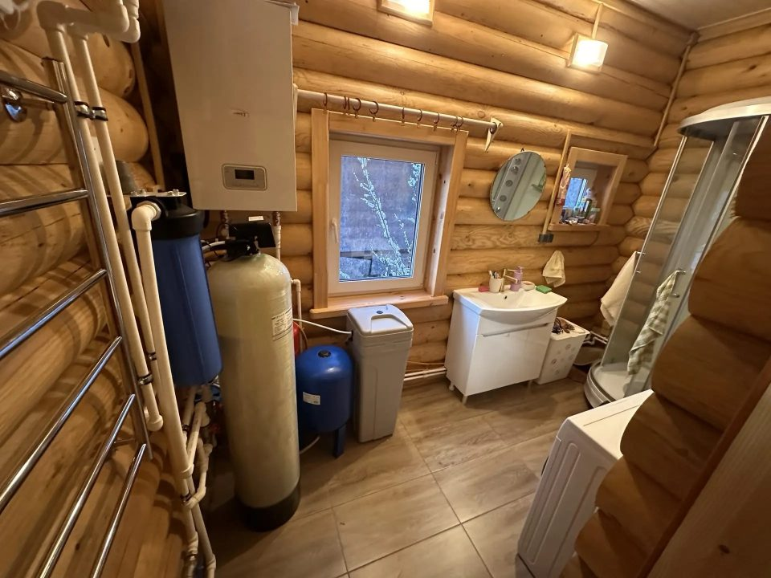
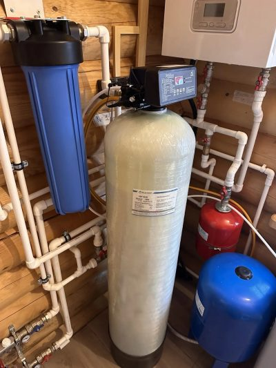
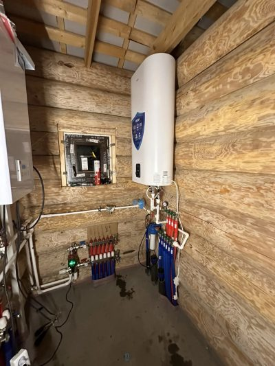

Водоснабжение частного дома: монтаж
Вода от скважины, колодца или центральной сети до каждого крана: одна бригада, один договор, давление без скачков.

Монтаж водоснабжения частного дома состоит из трёх частей: обвязка источника и ввод воды в дом, водоочистка по анализу при необходимости и разводка по дому. Ввод воды стоит от 45 000 руб., обвязка скважины от 85 000 руб., разводка от 3 500 руб. за точку, водоочистка от 60 000 руб. Работы занимают 5-12 рабочих дней, смету готовим за 24 часа.
Водоснабжение: что выбрать
Внутреннее водоснабжение и водоотведение
Вода и канализация по всему дому за один заход: коллекторы, правильные уклоны и опрессовка с протоколом.
Наружное водоснабжение
Вода в доме круглый год: труба на глубине 1,2 м, греющий кабель на вводе в дом, оборудование скважины под защитой.
Система фильтрации
Водоочистку подбираем по протоколу анализа вашей воды, а не по рекламе: каждая ступень имеет задачу и пробоотборный кран.
Водоснабжение частного дома мы собираем как одну цепочку, а не как набор отдельных заказов. Вода идёт от источника (скважина, колодец или центральный водопровод) через ввод в дом и узел подготовки к коллекторам и дальше к каждому крану. Если один участок сделан без оглядки на соседний, дом получает знакомый набор проблем: давление гуляет, фильтр забивается за месяц, а первой зимой замерзает труба на вводе.
Из каких частей состоит водоснабжение дома
Систему мы делим на три участка. У каждого своя страница с подробной схемой, ценами и сроками, а в смете они складываются в одну строку.
| Участок | Что входит | Цена от | Срок |
|---|---|---|---|
| Наружное водоснабжение | Обвязка скважины в кессоне или с адаптером, насос, траншея, ввод воды в дом, утепление | 45 000 руб. за ввод, 85 000 руб. за обвязку | 1-2 дня |
| Система фильтрации | Подбор по результатам анализа воды, водоочистка от железа и жёсткости, тонкая очистка, осмос на питьевой кран | от 60 000 руб. | 1-3 дня |
| Внутреннее водоснабжение и водоотведение | Узел ввода, разводка холодной и горячей воды (тройниковая или коллекторная), внутренняя канализация | 3 500 руб. за точку | от 2 до 5 дней |
Скважина, колодец или центральный водопровод
Скважина даёт воду круглый год и не зависит от паводка. Платить за это приходится очисткой: по данным региональных компаний по водоподготовке, в артезианской воде Ленобласти встречается от 5 до 30 мг/л железа при гигиенической норме 0,3 мг/л, поэтому водоочистку мы обычно закладываем в смету сразу.
Колодец дешевле в устройстве, но вода в нём ближе к поверхности и зависит от сезона: весной растут мутность и органика, возможны нитраты и бактерии. Для колодца анализ нужен расширенный, а в схему чаще добавляется ультрафиолетовый обеззараживатель.
Подключение к центральному водопроводу снимает вопрос с насосом, но механический фильтр на вводе мы ставим и там. Что бы вы ни выбрали, первым шагом идёт анализ воды: от него зависит схема очистки, а не наоборот.
Как мы собираем систему: узел ввода и разводка
В техническом помещении дома мы выстраиваем узел ввода в строгом порядке, который зависит от источника воды. От скважины или колодца: запорный кран, фильтр, обратный клапан, реле сухого хода, реле давления с манометром, фильтр тонкой очистки. От центрального водопровода: запорный кран, фильтр, счётчик, обратный клапан, редуктор давления с манометрами до и после него, фильтр тонкой очистки. Для центрального водопровода порядок не декоративный. В СП 30.13330.2020 записано, что перед водосчётчиком на металлических трубопроводах ставится механический фильтр, а после счётчика обратный клапан, и что при давлении у нижнего прибора выше 0,45 МПа обязателен регулятор давления. Два манометра до и после редуктора показывают за секунду, на каком участке просело давление.
Дальше вода расходится по дому, и разводка бывает двух видов. Тройниковая (последовательная): магистраль идёт вдоль приборов, к каждому делается ответвление на тройнике. Она проще и дешевле, подходит небольшому дому с одним санузлом, но при открытом кране в одной точке давление в соседних проседает. Коллекторная: к каждому прибору идёт отдельная труба из сшитого полиэтилена PE-Xa, поэтому открытая лейка не перебивает давление в душе, а любую точку можно перекрыть, не оставляя дом без воды. Она дороже по материалам, зато надёжнее в доме с несколькими санузлами. Схему выбираем под дом и бюджет. В стяжке труба идёт цельной, без соединений, а коллекторы убираем в шкаф по желанию заказчика.
Готовую систему мы опрессовываем по регламенту производителя труб и оформляем протокол. Для труб PEX-A, например, это 11 бар в течение 30 минут, затем снижение до 5,5 бар и выдержка 2 часа с осмотром всех соединений. Каждый этап снимаем в фотоотчёт, пока трубы ещё не закрыты.
Что отличает Ленобласть: грунт, мороз и вода
Глубина промерзания в Петербурге и ближайших районах области в среднем около 1,2 м. Трубу водопровода мы закапываем на 1,2 м, а на вводе в дом ставим греющий кабель. Подробности на странице наружного водоснабжения.
Вторая местная особенность: качество воды сильно разное даже в соседних посёлках. Одни скважины страдают от железа, другие от повышенной жёсткости (в справочных материалах это Ломоносовский, Волосовский и Гатчинский районы), в третьих появляется запах сероводорода. Поэтому водоочистку подбираем по результатам анализа воды.
Сколько стоит водоснабжение дома 150 м2
Для дома 150 м2 с двумя санузлами и скважиной ориентир такой: ввод воды от 45 000 руб., обвязка скважины от 85 000 руб. (с адаптером) или от 120 000 руб. (в кессоне), разводка воды от 95 000 руб. с материалами, водоочистка от 60 000 руб. Итого от 285 000 руб. без сантехники и бурения. Для сравнения, на рынке Петербурга точка водоснабжения у частных мастеров начинается от 1 500 руб. (у нас от 3 500 руб., работы и материалы), а готовые системы водоочистки для коттеджа предлагают от 72 000 до 495 000 руб. Точную цену даём после замера, цифры в таблице ниже примерные.
Обновлено 07.10.2026
Цены на работы
Цены «от» - ориентир. Точную стоимость дадим сметой после замера и зафиксируем в договоре.
| Работа | Ед. | Цена |
|---|---|---|
| Ввод воды в дом (до 10 м) | комплект | от 45 000 руб. |
| Обвязка скважины с адаптером | комплект | от 85 000 руб. |
| Обвязка скважины в кессоне | комплект | от 120 000 руб. |
| Водоочистка (одна ступень) | комплект | от 60 000 руб. |
| Точка водоснабжения | точка | от 3 500 руб. |
| Точка канализации | точка | от 2 500 руб. |
Используем оборудование только проверенных производителей.
Цены «от», итог - по смете после замера, не оферта. Обновлены 07.10.2026.
Рассчитайте стоимость за 1 минуту
Шесть коротких вопросов - и вилка стоимости на экране. Точную смету дадим после замера.
- С оборудованием и материалами, по нашим объектам 2025-2026 годов
- Точная смета - через 24 часа после бесплатного замера
- Цена в смете фиксируется в договоре
Наши объекты по этой услуге
Площадь, материал стен, срок и бюджет по каждому дому. Точные адреса не публикуем.
Отопление без газа и разводка воды, дом 140 м², Сосново
Котельная и отопление дома 180 м² из газобетона, Юкки
Водяной тёплый пол во всём доме 210 м², Гатчинский район
Котельная с каскадом газовых котлов, дом 320 м², Токсово
Как выглядит готовый монтаж


Как мы работаем: этапы и сроки
Сроки каждого этапа - в графике к договору.
Замер и анализ воды
Приезжаем на объект, смотрим скважину или колодец, технические помещения и места сантехники. Пробу воды сдают в лабораторию, результат через 3-4 дня, по нему подбираем схему. Смету присылаем за 24 часа.
Схема и договор
Согласовываем схему: кессон или адаптер, трассу ввода, состав системы водоочистки. Поэтапная оплата.
Наружная часть
Обвязка источника, траншея, ввод в дом. Обычно 1-2 рабочих дня с техникой.
Водоочистка и узел ввода
Монтируем оборудование в техническом помещении, собираем узел ввода. 1-3 дня.
Разводка по дому
Трубы воды и канализации прокладываем до стяжки и чистовой отделки. 3-6 дней в зависимости от числа точек.
Опрессовка и сдача
Опрессовка с протоколом, промывка, настройка давления, фотоотчёт по всем скрытым участкам, инструкция по эксплуатации.
Что должно быть готово в доме
- Скважина пробурена или колодец готов
- Известно место ввода воды в дом
- Определены места сантехники
- Есть помещение под фильтры и бойлер
Гарантии, оплата и прозрачная смета
Никаких «примерно» после подписания: цена, сроки и гарантия - на бумаге.
3 года на работы
Гарантия на монтаж прописана в договоре. На оборудование — гарантия производителя, помогаем с обращением.
Цена фиксируется в договоре
Итог по смете не растёт в процессе. Дополнительные работы — только по вашему письменному согласию.
Сроки фиксируются в договоре
График монтажа по этапам. За срыв срока по нашей вине — неустойка, указанная в договоре.
Оплата
Порядок платежей фиксируем в договоре.
Показать пример сметы
Смета пример
Так выглядит смета, которую вы получите через 24 часа после замера: оборудование, материалы и работы отдельными строками.
Цифры в смете - пример, итог по вашему дому - после замера.
| Позиция | руб. |
|---|---|
| Узел ввода, фильтры, коллекторы | 38 700 |
| Разводка воды, 14 точек, PE-Xa | 61 200 |
| Канализация, 11 точек, стояк с шумоизоляцией | 42 500 |
| Инсталляции, 2 шт | 29 800 |
| Опрессовка и проливка | 6 000 |
| Итого | 178 200 |
Вопросы и ответы
Сколько стоит водоснабжение частного дома с монтажом?
Для дома 150 м2 со скважиной и двумя санузлами от 285 000 руб. без бурения и сантехники: ввод воды, обвязка скважины, одноступенчатая очистка и разводка. Цена растёт, если нужен кессон, длинная траншея или полная система водоочистки. Точную смету делаем за 24 часа после замера.
С чего начать, если скважина уже пробурена?
С анализа воды и проверки паспорта скважины: глубина, дебит, динамический уровень. По ним подбираем насос и схему обвязки. Анализ занимает 3-4 дня, поэтому лучше заказать его заранее, ещё до строительных работ.
Нужна ли очистка, если вода из скважины прозрачная?
Нужна проверка, а не обязательно оборудование. Растворённое железо бесцветно, на воздухе окисляется и вода желтеет уже в стакане или в бойлере. Решение принимаем по протоколу анализа: если показатели в норме, водоочистку не продаём.
Можно ли сделать водоснабжение зимой?
Можно, но траншея в мёрзлом грунте дороже и медленнее. Ввод и обвязку скважины мы чаще планируем на осень до морозов или на март. Внутреннюю разводку в отапливаемом доме делаем в любое время года.
Вы бурите скважины?
Нет, бурение выполняет специализированная организация. Мы подключаемся после бурения: обвязка, ввод, очистка, разводка. Если скважины ещё нет, подскажем, какие данные взять у буровиков для подбора насоса.
Как оплачивается работа и есть ли гарантия?
Оплата поэтапная: по этапам работ, без переплат вперёд. Гарантия 3 года на смонтированные системы, договор фиксирует сроки и состав работ.
Смежные услуги
Инженерию дома выгоднее делать одним договором: общая котельная, один график и одна гарантия.
Получите смету за 24 часа
Оставьте телефон - специалист перезвонит, уточнит задачу и договорится о бесплатном замере. Можно сразу приложить проект дома.
- Замер бесплатно до 100 км от КАД
- Смета по позициям через 24 часа после замера
- Цена и сроки фиксируются в договоре